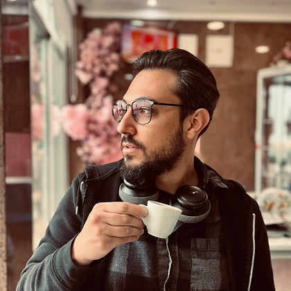

Domestic Employer Contributions Payment via MB WAY
The first MB WAY payment flow on Portugal's Social Security app, designed end-to-end from research to delivery.

Product Designer
I'm Paulo, a Product Designer who loves shaping digital experiences that feel simple, human, and honest. I move between UX Research, Interaction, and Visual Design, always looking for clarity and meaning in every detail.
Years in UX/UI showed me that good design is more about empathy than aesthetics, while my background in graphic design taught me the value of visual harmony.
I'm driven by curiosity, music, and the small moments when something just works.
The first MB WAY payment flow on Portugal's Social Security app, designed end-to-end from research to delivery.
700k+ citizens reached and task times cut from days to 5 minutes.
Modernizing Yamaha Liberacred: A responsive, component-driven UI redesign focused on accessibility.
PagBank: Optimizing KYC onboarding by resolving 50+ operational friction points across the document journey.
Working on strategic projects in the Revenue and Contributions area of Portuguese Social Security.
Design of tailored products. Creation of wireframes and high-fidelity prototypes.
Led the project from conception to final delivery of a B2C financial web application.
Design of digital products that solve user needs and ensure a good user experience across various platforms and systems, both on the web and on mobile devices (iOS and Android). Worked on both B2B and B2C products.
Designed user flows, wireframes, and interactive prototypes for web and mobile applications. Created style guides to ensure coherence between components and product use.
Coordination of projects involving all of the group's brands and development of materials related to the companies' visual communication.
Brand design, editorial layout, and visual communication for various clients and creative studios.